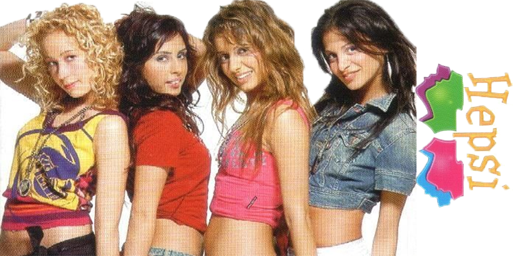
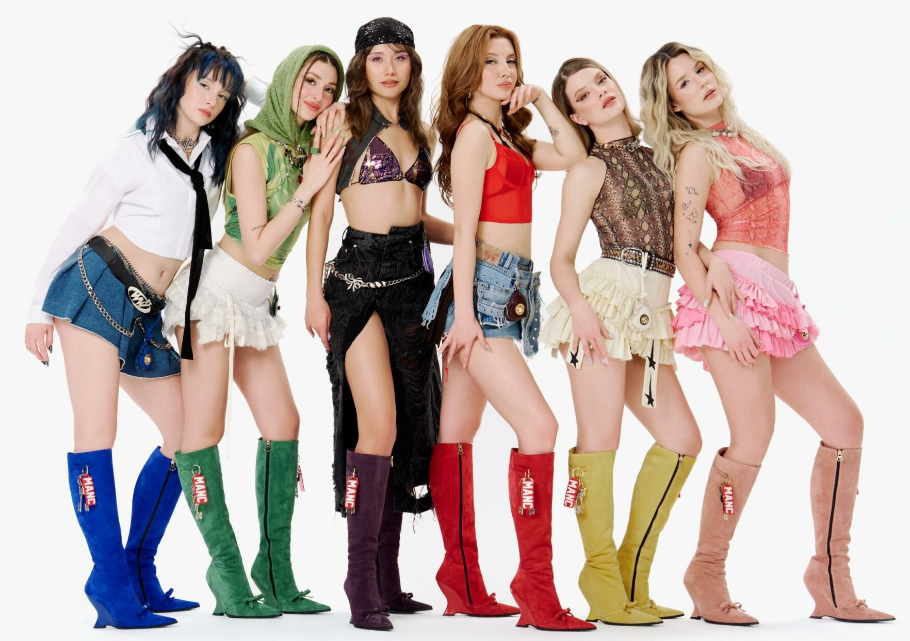

Day 2
For the last 5-6 years I have been listening to kpop. Through fandoms
and platforms I have met a lot of people and joined communities. This
became a huge thing in the whole world as much as it is in Türkiye.
In 2024, a survival/reality show called "Big 5" started. It is aimed
at forming a new music group (and is still ongoing). When I first saw
this show, I immediately knew it was going to be the start of a new
era in Turkish pop music. Of course, there are many Turkish music
groups, and one of the most beloved among them is "Hepsi". This was a
four member girl group that was incredibly famous in the 2000s for
their dances, songs, and performances. It was clear from the
promotional videos that this show wanted to create a group in a
similar vein. However, with the influence of K-pop, we can say that
the point it has evolved into is a bit different. In short, this is
how it all started for me.

With the group 'Manifest' that debuted after the show, this has turned
into a massive trend over the last two years. Manifest's popularity
brought along other shows and groups. Currently, there are many
new-generation singers in the industry who have also made solo debuts.
This means a great deal to me. When I was younger, I used to think
that this kind of industry could never exist or survive in Türkiye. It
felt as if there was no place for us young people. But right now, many
Turkish youths like me are experiencing this excitement, and music
that truly appeals to us is being produced. Along with it, a lot of
different stage shows, dances, and trends are emerging. Since I have
always loved dancing and singing, being able to do this in my own
native language makes me happier than I ever imagined and gives me so
much inspiration.
